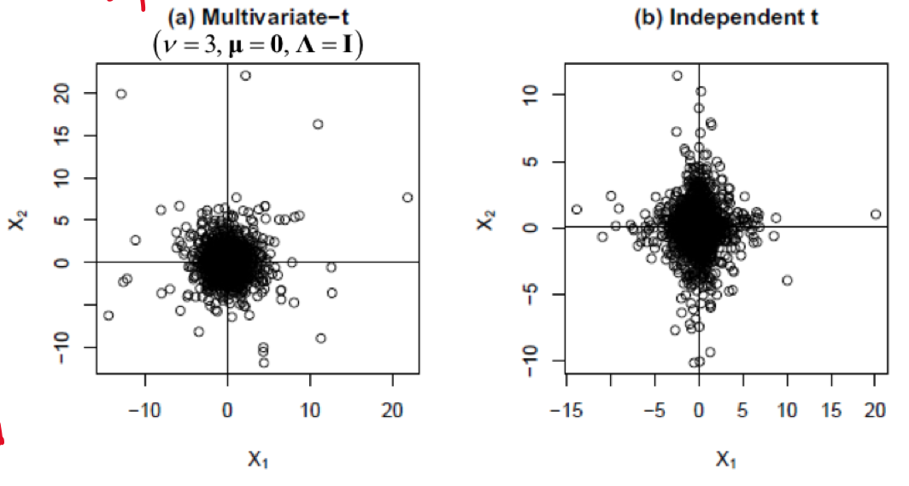
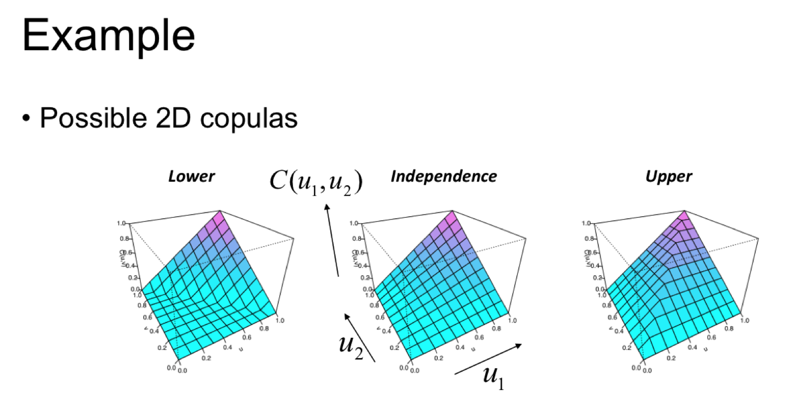
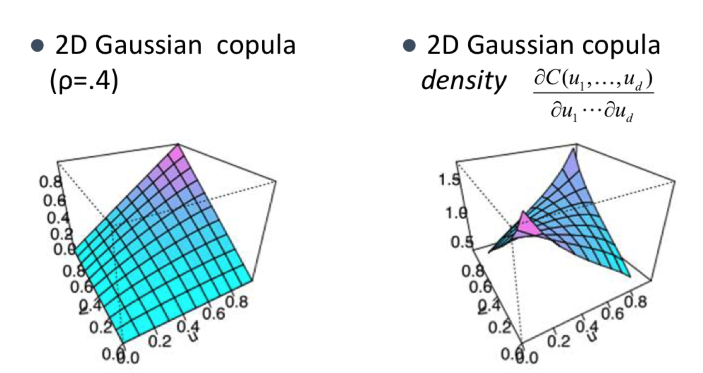
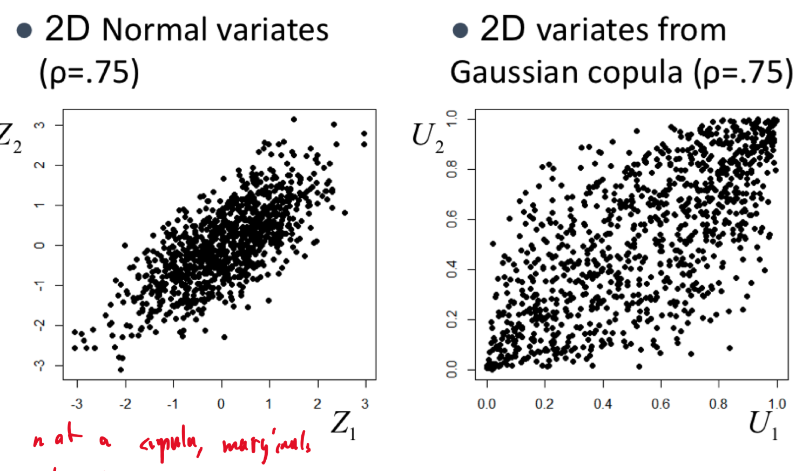
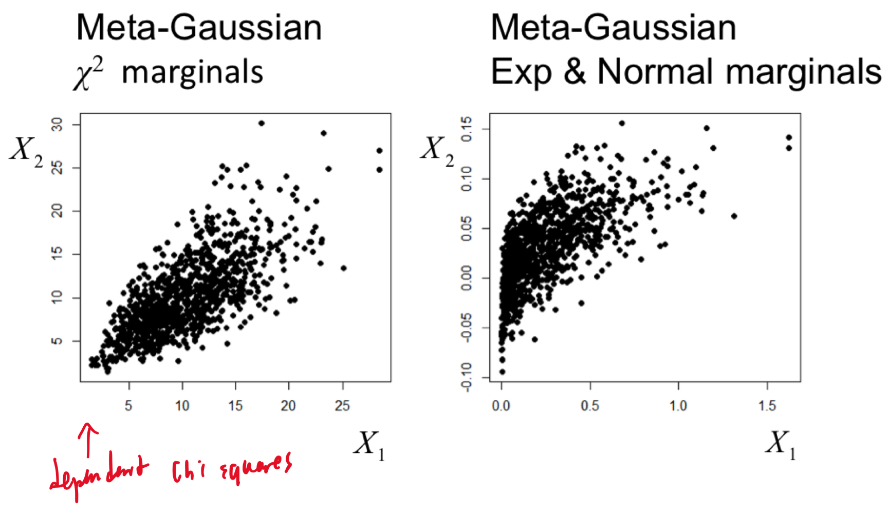
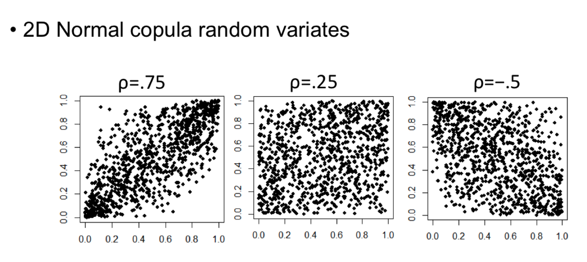
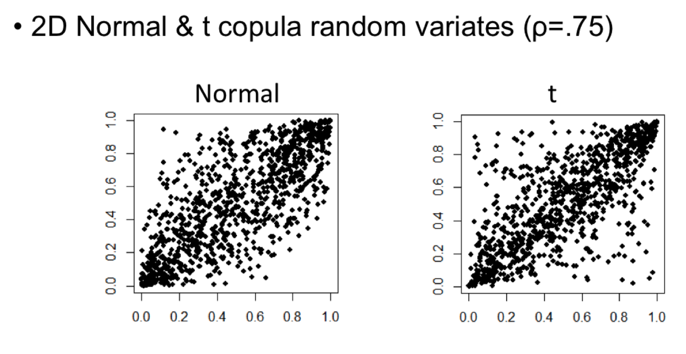
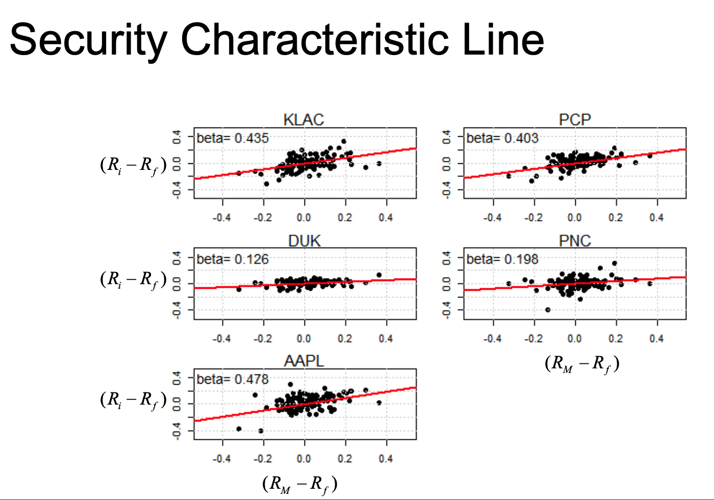
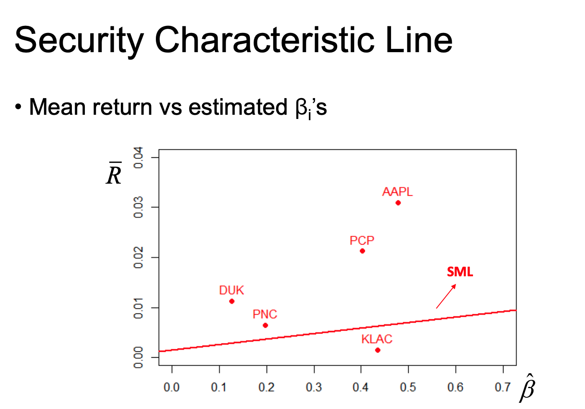

Chapter 5 Multivariate Return Modelling
When modelling returns of multiple assets, it’s common to assume the correlation between them is constant.
Many investment strategies combine multiple assets together, but how those assets are related is an important piece of information to understand. It’s also difficult to model. Say we start with a simple multivariate Normal, where dependence \(\leftrightarrow\) covariance, so we can model their relations with the covariance matrix.
5.1 Covariance & Correlation Matrix
For a linear combination of assets, we can attempt to use the following covariance matrix to describe their linear dependence: \[ Cov[A^{T}R] = A^{T}Cov[R]A, \quad \text{where }\begin{cases} A = \text{Constant matrix} \\ R = \text{random vector} \end{cases} \] Unfortunately, sample covariance estimation is very sensitive to extreme values, which happen frequently with return (See heavy tails)
Returns are often treated as independent samples, but that is not realistic.
5.2 Multivariate Student’s t Distribution
We should never remove outliers in finance. We must model the heavy tails (extreme returns) somehow, and Student’s t distribution is one way to do that.
A multivariate Normal scale mixture model can be used to describe a multivariate Student’s t distribution: \[ \begin{aligned} \mathbf{R} &= \boldsymbol{\mu} + \mathbf{Z} \sqrt{ v/W } \sim t_{v}(\boldsymbol{\mu}, \boldsymbol{\Lambda})\\ \\ \text{Where } & W \sim \chi^{2}(df=v)\\ & \mathbf{Z} \sim N(\mathbf{0}, \boldsymbol{\Lambda}) \quad \text{where } \boldsymbol{\Lambda} = Indentity \ Mat \end{aligned} \]
It’s mean and variance are:
\[ \begin{aligned} \mathbb{E}(\mathbf{R}) &= \mathbb{E}\left( \boldsymbol{\mu}+\mathbf{Z}\sqrt{ \frac{v}{W} }\right)\\ &= \boldsymbol{\mu} + \underbrace{ \mathbb{E}(\mathbf{Z}) }_{ =0 }\cdot \mathbb{E}\left( \sqrt{ \frac{v}{W} } \right)\\ &=\boldsymbol{\mu}\\ \\ Cov(\mathbf{R}) &= Cov\left( \boldsymbol{\mu} + \mathbf{Z} \sqrt{ \frac{v}{W} } \right)\\ &= Cov(\mathbf{Z}) \cdot Cov\left( \sqrt{ \frac{v}{W} } \right)\\ &= \boldsymbol{\Lambda}\cdot \frac{v}{v-2} \quad \text{where } v > 2 \end{aligned} \]

From these plots, we see that with the Multivariate t distribution, the extreme values between the two RVs are more evenly spread (the round shape of the points) and imply extreme values for both assets happen together. This is because they both share the same \(\Lambda\).
This shows that the multivariate t distribution is more practical and realistic than using the Normal to model multiple assets. We can linearly combine multivariate t-distributions with the same degrees of freedom:
\[ \begin{aligned} \mathbf{Y} &\sim t_{v}(\boldsymbol{\mu}, \boldsymbol{\Lambda}) \implies \mathbf{w}^{T}\mathbf{Y} \sim t_{v}(\mathbf{w}^{T}\boldsymbol{\mu}, \mathbf{w}^{T}\boldsymbol{\Lambda}\mathbf{w})\\ \\ \mathbb{E}[\mathbf{w}^{T}\mathbf{Y}] &= \mathbf{w}^{T}\mathbb{E}(\mathbf{Y})\\ Var[\mathbf{w}^{T}\mathbf{Y}] &= \mathbf{w}^{T}Var\left( \boldsymbol{\mu}+\mathbf{Z}\sqrt{ \frac{v}{W} } \right)\mathbf{w}\\ &= \mathbf{w}^{T}Var(\mathbf{Z})Var\left( \sqrt{ \frac{v}{W} } \right)\mathbf{w}\\ &= \frac{v}{v-2}(\mathbf{w}^{T}\boldsymbol{\Lambda}\mathbf{w}) \end{aligned} \]
However, as seen above, the multivariate t distribution is restrictive because all the marginal distributions share the same degrees of freedom, as they all depend on the variance of \(W \sim\chi^{2}\).
5.3 Copulas
A more flexible way of modelling dependencies of RVs is using copulas.
Definition: A copula (C) is a multivariate CDF with Uniform(0,1) marginals
\[ \begin{aligned} C(u_{1}, u_{2}, \dots u_{d}) \in [0,1], \quad \forall \ u_{1},\dots u_{d} \in [0,1]\\ \\ \text{Where }\begin{cases} C(0,0, \ldots, 0)=0 \\ C(1,1, \ldots, 1)=1 \\ C\left(\ldots, u_{i-1}, 0, u_{i+1}, \ldots\right)=0 \\ C\left(1, \ldots, 1, u_i, 1, \ldots, 1\right)=u_i \end{cases} \end{aligned} \] Third case: The cumulative probability of one RV being less than or equal to 0 regardless of what the other RVs are in a copula is 0. Fourth case: The cumulative probability that the other RVs have values less than 1 is 1 but the \(i^{th}\) RV is \(u_{i}\) is simply \(u_{i}\)
5.3.1 The independence copula
\(C_{indep} (u_{1}, \dots u_{d} = u_{1} \times \dots \times u_{d})\)
By the Frechet-Hoeffding theorem, any/every copula is bounded by
\[ \begin{aligned} & \underline{C}\left(u_1, \ldots, u_d\right) \leq C\left(u_1, \ldots, u_d\right) \leq \bar{C}\left(u_1, \ldots, u_d\right) \\ & \text { where } \begin{cases} \underline{C}\left(u_1, \ldots, u_d\right)=\max \left\{1-d+\sum_{i=1}^d u_i, 0\right\} \\ \bar{C}\left(u_1, \ldots, u_d\right)=\min \left\{u_1, \ldots, u_d\right\} \end{cases} \end{aligned} \] \(\max \left\{1-d+\sum_{i=1}^d u_i, 0\right\}\) is 1 minus number of uniforms plus the values of the uniforms
- (if \(\mathbf{d=5}, u_{1}=.5,u_{2}=.4,u_{3}=.7,u_{4}=.2,u_{5}=.6\)
- then \(\max(1-5+2.4 = \mathbf{-1.6},0)\) )
- This implies the minimum of the Copula is bounded by 0, or higher if the average value of the uniforms are \(\geq\frac{d-1}{d}\).
\(\min \left\{u_1, \ldots, u_d\right\}\) implies the max of the Copula is bounded by the smallest marginal probability, which makes sense as that is the only one limiting the cumulative probability.

5.3.2 Sklar’s Theorem
Any continuous multivariate CDF \(F(x_{1}, \dots x_{d})\) with marginal (1D) CDF’s \(F_{i}(x_{i}) \ \forall \ i=1,\dots,d\) can be expressed in terms of a copula \(C\), as \[ F(x_{1},\dots x_{d}) = C(F_{1}(x_{1}), \dots, F_{d}(x_{d})) \]
Inverse is also true, where any copula combined with marginal CDF’s can give a multivariate CDF.
- Copula’s model dependence separately from the marginal distributions of the RVs
If \(X \sim F \implies F(x) \sim Unif(0,1) \implies F^{-1}(Unif) \sim F\) If an RV follows some CDF \(F\), then …
If you take a copula of a bunch of marginal CDF’s, you can obtain the multivariate CDF of all the marginals. The inverse is true, where you can take a multivariate CDF and come up with a copula to represent the dependency between the marginal distributions, and the marginal distributions themselves. (I think is what this is saying.)
5.3.2.1 Example
For a continuous CDF \(F(x_{1},\dots,x_{d})\) with marginals \(F_{i}(x_{i})\), the copula is given by: \[ \begin{aligned} C(F_{1}(x_{1}),\dots,F_{d}(F_{d})) &= F(x_{1},\dots,x_{d}) \ \text{by Sklar's Thm}\\ \\ \text{Let } u_{i}= F_{i}(x_{i}) &\implies x_{i} = F_{i}^{-1}(u_{i})\\ \end{aligned} \] \[ \therefore \mathbf{C(u_{1},\dots,u_{d}) = F(F_{1}^{-1}(u_{1}),\dots,F_{d}^{-1}(u_{d}))}\\ \]
- Ask Sotirios what if \(F_{i}(x_{i})\) is not uniform?
5.3.3 Gaussian Copula
We can also construct copula’s of non uniform distributions, such as this multivariate Normal CDF:
\[ \text{Let } \mathbf{X}\sim N_{d}(\boldsymbol{\mu}, \boldsymbol{\Sigma}) \quad \text{with Correlation Mat} \ \boldsymbol{\rho}\\ \] We can find the copula \(C_{p}\) of \(\mathbf{X}\) using: \[ C_{p}(u_{1},\dots u_{d}) = \Phi_{\boldsymbol{\mu},\boldsymbol{\Sigma}}(\Phi_{\mu_{1},\sigma_{1}^{2}}^{-1}(u_{1}), \dots, \Phi_{u_{d},\sigma_{d}^{2}}^{-1}(u_{d})) \] For multivariate distributions that have a Gaussian Copula are called meta-Gaussian distributions. These distributions themselves do not need to be Gaussian.

The second plot would be flat/uniform if the two independent distributions were not correlated (\(\rho=0\)). This plot shows that the probability of both being \(1\) or \(0\) is very high, but the probability that one is \(1\) and the other is \(0\) is virtually 0. This supports our goal of modelling distributions where extreme values occur together.
5.3.4 Creating Copula’s from Multivariate Distributions
We can create Copula’s from known multivariate Distributions such as the Normal or t distributions.
We copy the dependence structure of known distributions (allowing us to use different marginals for modelling)
Copula from multivariate Normal CDF with correlation matrix \(\boldsymbol{\rho}\) \[ \begin{aligned} C_{\rho}(u_{1},\dots ,u_{d}) &= \Phi_{\boldsymbol{\rho}}(\Phi ^{-1}(u_{1}), \dots, \Phi ^{-1}(u_{d}))\\ \end{aligned} \] \[ \begin{aligned} \text{Where } & \begin{cases} \Phi_{\rho} \text{ is multivariate Normal CDF with correlation } \boldsymbol{\rho} \\ \\ \Phi \text{ is Standard univariate Normal CDF} \end{cases} \end{aligned} \] ### Simulating from a Copula Simulating from a distribution with a copula (dependence between marginals) and marginals themselves can be done with the following steps:
- Generate (dependent) uniforms from the copula:
- \[ (U_{1},\dots U_{d}) \sim C \]
- This is done by generating from a multivariate normal with correlation \(\boldsymbol{\rho}\)
- \[ \mathbf{Z} = \left[ \begin{array}{} Z_{1} \\ \vdots \\ Z_{d} \end{array} \right] \sim N_{d}(0,\boldsymbol{\rho}) \]
- Calculate uniforms as their marginal CDF’s (value of uniform var is a probability \(P(Z \leq Z_{i})\))
- \[ U_{i}=\Phi(Z_{i}), \ i=1,\dots,d \]
- Then we can use the uniforms with any other marginal
- This is a very involved process, that we don’t need to go into
- Generate target variates from marginals, using the inverse CDF method
- \[ X_{i} = F_{i}^{-1}(U_{i}) \ \forall \ i \]
It’s difficult for simulating uniforms from multivariate copula.
Simulating from just the 2D Multivariate normal with a correlation of 75% compared to simulating from the Gaussian Copula with the same correlation between variables.

We can use two different marginals (\(\chi^{2}\) in this case), which are meta-Gaussian as they have a gaussian copula.

Here we see the simulated copula values for different correlation values.

We can also see the differences between a Copula created using Normal and t distributions

5.4 CAPM
The CAPM theory suggests that all investors hold some form of the tangency/market portfolio.
The slope of the tangency portfolio is also known as the Sharpe Ratio, or Market Price of Risk.
5.4.1 Security Market Line
For each individual asset, CAPM implies the following risk/reward relationship (Security Market Line) \[ \begin{aligned} \mu_{i} &= \mu_{f} + \beta_{i}(\mu_{M}-\mu_{f}) \quad \text{Where } \begin{cases} \beta_{i} = \frac{\sigma_{iM}}{\sigma^{2}_{M}} \\ \sigma_{iM} = Cov(R_{i, R_{M}}) \end{cases}\\ &= \mu_{f} + \left( \frac{\mu_{M}-\mu_{f}}{\sigma_{M}} \right) \cdot \sigma_{p} \end{aligned} \]
- \(\beta_{i}\) is different for each asset, it captures how related the return on the given asset is with the Market return.
- \(\sigma_{M}\) is the market risk AKA undiversifiable risk
5.4.2 Security Characteristic Line
The \(\beta_{i}\)’s are found empirically, by regressing (\(R_{i}-R_{f}\)) on (\(R_{M}-R_{f}\)) - Where \(R_{M}\) is the market return (Proxy by large market index, ex S&P500) - \(R_{f}\) is the risk free rate (proxy by T-bill)
\[ (R_{i,t} - R_{f,t}) = \beta_{i}(R_{M,t}-R_{f,t})+\epsilon_{t}, \quad \text{ where } \epsilon_{t} \sim N(0,\sigma^{2}_{\epsilon,i}) \]
By fitting this, we can then extract the \(\beta_{i}\)’s!

However the mean expected return is much different than the actual return. Therefore the CAPM model doesn’t work very well, or hold.

An iteration of this model includes an intercept, \(\alpha\) \[ (R_{i,t} - R_{f,t}) = \alpha_{i} + \beta_{i}(R_{M,t}-R_{f,t})+\epsilon_{t} \] Finding the mean and variance: \[ \begin{aligned} \mu_{i} = \mathbb{E}[R_{i}] &= \mathbb{E}[R_{f,t}+\alpha_{i}+\beta_{i}(R_{M,t}-R_{f,t})+\epsilon_{t}]\\ &= \underbrace{ \mathbb{E}[R_{f}] }_{ R_{f} } + \alpha_{i} + \beta_{i}\underbrace{ \mathbb{E}[R_{m}-R_{f}] }_{ \mu_{m - R_{f}} } + \underbrace{ \mathbb{E}[\epsilon_{t}] }_{ =0 }\\ &= R_{f} + \alpha_{i} + \beta_{i}(\mu_{m}-R_{f})\\ \\ \sigma^{2}_{i} = \mathbb{V}[R_{i}] &= \mathbb{V}[\underbrace{ R_{f}+\alpha_{i} }_{ Var = 0 }+\beta_{i}(R_{m}-R_{f})+\epsilon_{i})]\\ &= \mathbb{V}[\beta_{i}(R_{m}-\underbrace{ R_{f} }_{ Var = 0 }] + \mathbb{V}[\epsilon_{i}]\\ &= \beta_{i}^{2} \cdot \mathbb{V}[R_{M}] + \sigma^{2}_{\epsilon, i}\\ &= \beta^{2}_{i}\cdot \sigma^{2}_{m}+\sigma^{2}_{\epsilon,i} \end{aligned} \]
Time doesn’t matter for the risk free or market returns
5.4.2.1 Alpha & Beta
An asset’s beta \(\beta_{i}\) can be seen as a measure of both risk & reward \[ CAPM \to \mu_{f} = \mu_{f} + \beta_{i}(\mu_{M}-\mu_{f}) \implies \mu_{i} = \mu_{f} + \beta_{i}\underbrace{ \left(\frac{\mu_{M}-\mu_{f}}{\sigma_{M}} \right)}_{ \text{Sharpe Ratio} }\sigma_{M} \]
\(\beta_{i}\) measures extent of the return of a given asset is related to the market
If you believe in CAPM, then the bigger beta is, the more risk you will have but also the more reward you will have.
\(\alpha_{i}\) measure how much the asset outperforms the market consistently, the amount returned on top of the \(\beta_{i}\)
5.4.3 Legacy of CAPM
CAPM is wrong, but had immense practical impact on investing, specifically in terms of - Diversification: concept of decreasing risk by spreading portfolio over different assets - Index investing: justification for common investing strategy of tracking some broad index with mutual funds or ETF’s - Benchmarking: Measuring performance of investment relative to market / index
5.4.4 Performance Evaluation
CAPM says the best portfolio you can create is the tangency/market portfolio. This implies the best you can do is get the broadest index and combine it with a T-bill.
Aside: In the past, you needed to use a mutual fund because exchange traded funds didn’t exist. Thats how most people invested, even though they cost high fees as there was a lot of human involvement.
There are several ways to measure an asset’s performance, based on CAPM
Sharpe ratio: (excess return per unit risk) \[ S_i=\frac{\mu_i-\mu_f}{\sigma_i} \]
- If you combine different assets, you can reduce the \(\sigma_{i}\) of the portfolio, so it’s not objective because two assets may be really risky, but negatively correlated reducing \(\sigma_{i}\).
- It doesn’t however measure how correlated a portfolio is to the market.
Treynor index: (excess return per unit non-diversifiable risk) \[ \quad T_i=\frac{\mu_i-\mu_f}{\beta_i} \]
- You would look at this to find the best return
Jensen’s alpha: (excess return on top of the return explained by the market) \[ \quad \alpha_i=\hat{\alpha}_i \]
- Usually the most important measure a portfolio manager tries to use to convince people to invest in them.
5.5 Factor models
The CAPM model assumes the market is a single factor that drives asset returns. - In practice, CAPM does not adequately describe real-world returns
We can improve this model by including more factors in the regression.
There are three types of factor models we will look at:
- Macroeconomic: Factors are observable economic and financial time series data (eg return of the S&P 500)
- Fundamental: Created explicitly or implicitly from observable asset characteristics
- Statistical (Latent variable model): Factors are unobservable and extracted from asset returns
All three types follow some form of \[ R_{i}(t) = \beta_{i,0} + \beta_{i,1}F_{1}(t)+\dots+\beta_{i,p}F_{p}(t)+\epsilon_{i}(t), \quad \forall \begin{cases} i=1,\dots, N \\ t \in \mathbb{R} \end{cases}\\ \] where: - \(R_{i}(t)\) is return on the \(i^{th}\) asset at time t - \(F_{j}(t)\) is the \(j^{th}\) common factor at time t - \(\beta_{i,j}\) is the factor loading/beta of \(i^{th}\) asset on the \(j^{th}\) factor - \(\epsilon_{i}(t)\) is the idiosyncratic/unique return of asset \(i^{th}\)
We want the errors to be independent from the factors, \[ Cov[\epsilon(t), F(t)] = 0 \]
In matrix form,
\[ \begin{aligned} & \Leftrightarrow \\ & {\left[\begin{array}{c} R_1(t) \\ \vdots \\ R_N(t) \end{array}\right] }=\left[\begin{array}{c} \beta_{1,0} \\ \vdots \\ \beta_{N, 0} \end{array}\right]+\left[\begin{array}{ccc} \beta_{1,1} & \cdots & \beta_{1, p} \\ \vdots & \ddots & \vdots \\ \beta_{N, 1} & \cdots & \beta_{N, p} \end{array}\right]\left[\begin{array}{c} F_1(t) \\ \vdots \\ F_p(t) \end{array}\right]+\left[\begin{array}{c} \varepsilon_1(t) \\ \vdots \\ \varepsilon_p(t) \end{array}\right] \\ & \Leftrightarrow \\ & \mathbf{R}(t)=\boldsymbol{\beta}_0+\boldsymbol{\beta}^{\top} \mathbf{F}(t)+\boldsymbol{\varepsilon}(t) \end{aligned} \]
The factors \(F_{j}(t)\) are stationary with moments: \[ \begin{aligned} R(t) &= \beta_{0} + \beta^{T}F(t) + \epsilon(t)\\ \\ \mu_{r} &= \mathbb{E}(R(t)) = \mathbb{E}[\beta_{0} + \beta^{T}F(t) + \epsilon(t)]\\ &= \beta_{0}+\beta^{T}\underbrace{ \mathbb{E}[F(t)] }_{ \mu_{F} } + \underbrace{ \mathbb{E}[\epsilon(t)] }_{ 0 }\\ &= \beta_{0} + \beta^{T}\mu_{F}\\ \\ \Sigma_{R} &= \mathbb{V}[\beta_{0}+\beta^{T}F(t) +\epsilon(t)]\\ &\underbrace{= \mathbb{V}[\beta^{T}F(t)] + \mathbb{V}[\epsilon(t)]}_{ \text{As } F(t)\text{ indep of } \epsilon_(t)}\\ &= \beta^{T}\underbrace{ \mathbb{V}[F(t)] }_{ \Sigma_{F} }\beta+\Sigma_{\epsilon}\\ &= \beta^{T}\Sigma_{F}\beta+\underbrace{ \Sigma_{\epsilon} }_{ \text{Diagonal} } \end{aligned} \]
We can also find the moments of the portfolio with weights \(w = [w_{1}, \dots w_{N}]^{T}\) \[ \begin{aligned} R_{port} = w^{T}R \implies \begin{cases} \mu_{port} = \mathbb{E}[R_{port}] = w^{T}\mathbb{E}[R] = w^{T}(\beta_{0}+\beta_{\mu_{F}}) \\ \sigma^{2}_{port} = \mathbb{V}[R_{port} = \mathbb{V}[w^{T}R] = w^{T}\mathbb{V}[R]w = w^{T}(\beta^{T}\Sigma_{F}\beta+\Sigma_{\epsilon})w \end{cases} \end{aligned} \]
5.5.1 Time Series Regression Models
Consider model for which factor values are known (e.g. macro/fundamental model)
Estimate betas & risks (variances) one asset at a time, using time series regression - For each fixed \(i=1,\dots N\), fir regression model: \[ R_{i}(t) = = \beta_{i,0} + \beta_{i,1}F_{1}(t)+ \dots + \beta_{i,p}F_{p}(t) + \epsilon_{i}(t) \]
Most models will always include some proxy for the overall economy (eg the market)
Instead of Fama-French, there is BARRA which uses the cross section of returns? Still regression tho
5.5.1.1 Fama-French 3 Factor Model
Additionally to the market, they looked at two other factors that are consistent over many datasets and time periods.
Small Minus Big: (SMB) One factor tries to capture the size(market cap) of the company/stock, which empirically showed that size played a role in its return - Regressed returns on how companies of a certain size/group did - They took the smallest and biggest companies, and looked at their avg return over some period, creating a difference to use to separate the groups of companies
High Minus Low (HML): The second factor looks at whether a company is a value one or not. Measured using book-to-market ratio.
These two factors were found to have statistically significant coefficients in multiple regression.
People frequently use the factor model to estimate the return covariance matrix. They can use the sample covariance matrix of the factors and apply the beta vector in order to obtain the return covariance matrix
\[ \operatorname{Var}(\mathbf{R})=\hat{\boldsymbol{\Sigma}}_R=\hat{\boldsymbol{\beta}}^{\top} \hat{\boldsymbol{\Sigma}}_F \hat{\boldsymbol{\beta}}+\hat{\boldsymbol{\Sigma}}_{\varepsilon} \] where: \[ \begin{aligned} & \hat{\boldsymbol{\beta}}=\text { beta coefficient matrix (from regressions) } \\ & \hat{\boldsymbol{\Sigma}}_F=\text { factor sample covariance matrix } \\ & \hat{\boldsymbol{\Sigma}}_{\varepsilon}=\text { diagonal error variance matrix (from residuals) } \end{aligned} \] This gives more stable estimates than sample covariance.
5.5.2 Statistical Factor Models
In this model, the factors are unknown (latent) and unobserved. THis implies that we need to estimate both \(\beta\) and \(F\).
Unusual constraint: Because the factors are uncorrelated (not necessarily i.i.d.) \[ \Sigma_{F} = Cov(F)= I \sigma_F \quad \& \quad \mu_{F}=\mathbb{E}(F) = 0 \]
This gives us the resulting moments of the returns: \[ \begin{aligned} \mu_{R} &= \mathbb{E}[R] = \mathbb{E}[\beta_{0}+\beta^TF + \epsilon] = \beta_{0}+\beta^{T}\underbrace{ \mathbb{E}[F] }_{ 0 }+\underbrace{ \mathbb{E}[\epsilon] }_{ 0 } = \beta e_{0}\\ \\ \Sigma_{R} &= \mathbb{V}[R] = \mathbb{V}[\boldsymbol{\beta}_{0}+\boldsymbol{\beta}^{T}F+\boldsymbol{\epsilon}] = \boldsymbol{\beta}^{T}\mathbb{V}[F]\boldsymbol{\beta}+\boldsymbol{\Sigma_{\epsilon} = \beta^{T}(I\cdot \sigma_{F})\beta+\Sigma_{\epsilon}} \end{aligned} \]
5.5.2.1 Principle Component Analysis (PCA)
This technique helps reduce the dimensionality of a problem. Consider a factor model without errors: \[ \mathbf{R}(t) = \boldsymbol{\beta}_{0}+\boldsymbol{\beta}^{T}\mathbf{F}(t) \implies \boldsymbol{\Sigma_{R}=\beta^{T}\Sigma_{F}\beta} \]
Given a set of N assets, we can construct a set of variables (components) capturing most of the variability.
- PCA is a linear transformation
- The goal is to capture as much variation as possible.
When we apply PCA to the statistical model, we find \(n\) factors set as the PCA components. These components are uncorrelated, and have maximum variance.
\[ F_{1},\dots,F_{n} \text{ are factors which are the Principle Components} \] \[ \begin{aligned} F_{1} &= \gamma_{1}^{T}\mathbf{R} = \gamma_{11}R_{1}+\dots+\gamma_{1n}R_{n}\\ \vdots\\ F_{n} &= \gamma_{n}^{T}\mathbf{R} = \gamma_{n1}R_{1}+\dots+\gamma_{nn}R_{n}\\ \end{aligned} \]
Where each factor:
\[ \begin{aligned} F_{i} &= \gamma_{i}^{T}\mathbf{X} \quad \text{Maximizes } \ Var(F_{i})=\boldsymbol{\gamma_{i}^{T}\Sigma_{R}\gamma_{i}} \quad s.t. \boldsymbol{\gamma_{i}^{T}\gamma_{i}}=1\\ \end{aligned} \]
\[ \begin{aligned} Cov(F_{i},F_{j}) &= \gamma_{j}^{T}\Sigma_{R}\gamma_{i} = 0\\ \\ \text{Where }& i,j\in 1,\dots,n, \quad i > j \end{aligned} \]
supposedly does not imply that \(\gamma_{j}^{T}\gamma_{i} = 0\) which may mean they are not orthogonal? But PCA components should be orthogonal?

We can find the \(Cov(F)\) and beta (loading factor) of \(R_i\) on \(F_j\): \[ \begin{aligned} \mathbb{V}(\mathbf{F})&= \mathbb{V}(\mathbf{P}^{T}\mathbf{R})\\ &= \mathbf{P}^{T}\mathbb{V}(\mathbf{R})\mathbf{P}\\ &= \mathbf{P}^{T}\boldsymbol{\Sigma}_{R}\mathbf{P}\\ &\text{By Eigen-decomposition}\\ &= \mathbf{P^{T}(P\Lambda P^{T})P}\\ &\text{Where } \mathbf{P^{T}P} = 1\\ &= \boldsymbol{\Lambda} \end{aligned} \]
It’s kind of circular logic. Also, \(\Lambda\) is sorted with the eigenvalue associated with the eigenvector that captures the most variance is first.
Fact: Total variance of all PC’s is equal to original variable variance.
\[ \begin{aligned} \text{ PC Total Variance = Population Total Variance } &\iff\\ tr(\Lambda) = tr(\Sigma) &\iff\\ \lambda_{1}+\dots+\lambda_{P} = \sigma_{1}^{2}+\dots+\sigma^{2}_{N} \end{aligned} \]
The proportion of total variance that is explained by each PC is: \[ Var(PC_{j}) =\frac{\lambda_{j}}{\lambda_{1}+\lambda_{2}+\dots+\lambda_{N}} \quad \text{Where } j=1,\dots,N \]
5.5.2.1.1 Selecting Components
The important part of PCA is how many components to select to capture a suitable amount of variability.
You don’t need many components if the data is very correlated, and a few components may represent most of the variance in the data.
We can also use a scree plot and pick the number of components before some “elbow” point.


PCA run on the correlation matrix (which is the standardized covariance matrix, which is preferred when there is very large range of variances between variables)